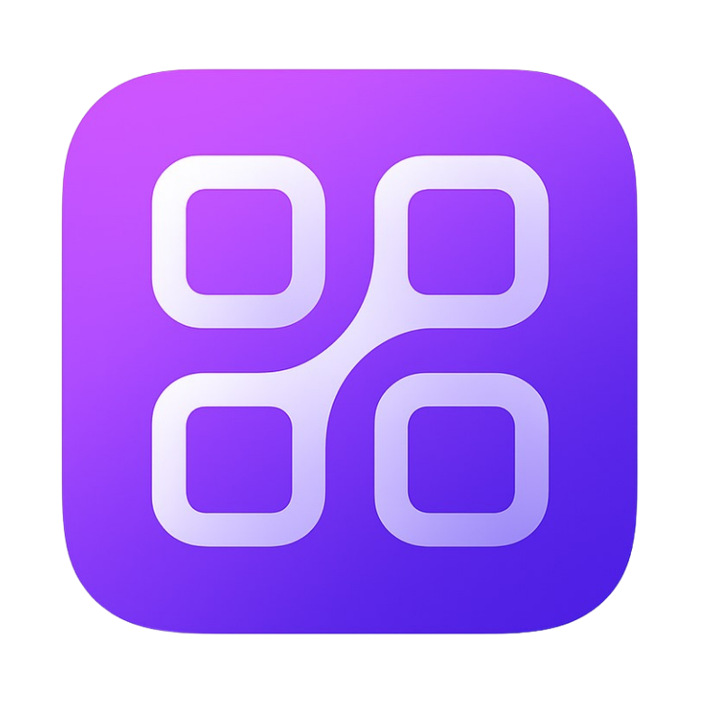

Construktor
Modelador de Módulos
Designer de Fluxos
Construtor de Páginas
Ajuda
Logado como
Carregando...
Configurações do Perfil
Convidar
Gerenciar Convites
0
Sair
Área de Fluxos
Use o scroll para zoom, barra de espaço para centralizar
Controles:
• Scroll do mouse: Zoom
• Arrastar: Mover área
•
Espaço
: Centralizar
• Arraste módulos da lateral
Zoom: 100%
Módulo
0 entidades